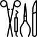

Unidad de Video Endoscopía Diagnóstica y Terapéutica
Somos los pioneros, con más de 12 años de experiencia ofreciendo el servico de endoscopía diagnóstica y terapéutica para canínos, felinos y animales silvestres.

Unidad de Cirugía de Mínima invasión Laparoscópica
Ofrecemos el servicio de Cirugía de Mínima invasión Laparoscópica, a tráves de un staff de médicos altamente calíficados, infraestructura y equipamientos de última generación.
Unidad de Medicina Reproductiva y Banco de Semen
Contamos con los últimos protocolos diagnósticos y terapéuticos para el manejos de las enfermedades que afectan el sistema reproductor de nuestras mascotas. Y desde hace dos años, venimos ofreciendo el servicio de congelamiento de semen, bajo los protocolos de CLONE USA.